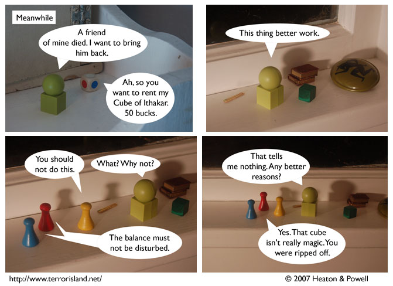

Strip #163
— Wednesday, June 27, 2007
The magic cube black market is notoriously untrustworthy
Notes, Thoughts, &c.
Ben’s Notes
When Aorist died, I was expecting dozens of people to ask why First Folio couldn’t just resurrect him using a magic cube rented from this guy. This strip was meant to put their speculation to rest once and for all.
Anyway, it turns out nobody asked that question. But now you know the answer anyway!
Lewis’s Notes
Having First Folio intend to resurrect Aorist in this strip was actually my idea, not Ben’s. And it wasn’t meant as some response to hypothetical reader questions.
Instead it was meant as simple wish-fulfillment on my part. The Cube of Ithakar is a “Mary Sue” character.
I wrote Lewis’s comments today. -Ben